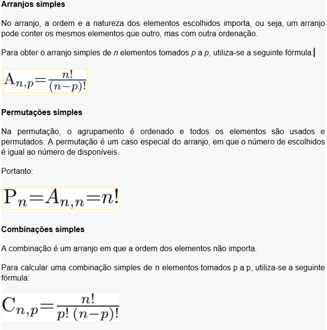
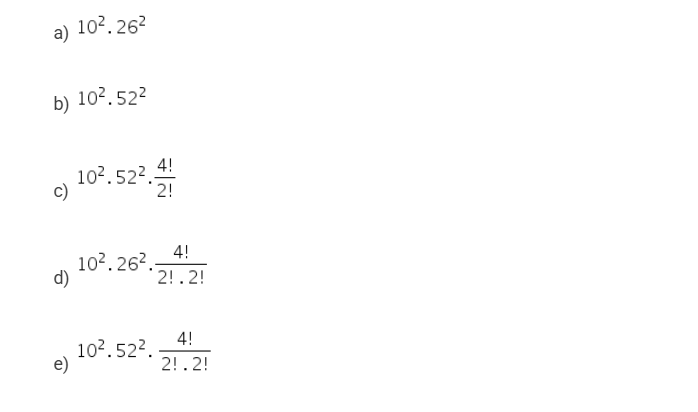

πclass — o principal pilar do seu aprendizado


Análise combinatória é a parte da Matemática que estuda problemas de contagem, ou seja, problemas nos quais o que há de ser determinado é o número de possibilidades para uma determinada situação-problema.
É muito utilizada quando se trata de probabilidade, pois permite contar tanto os casos favoráveis quanto os possíveis em muitas situações.
De início, é preciso entender o Princípio Fundamental da Contagem (PFC), para então começar a particularizar casos
O Princípio Fundamental da Contagem pode ser aplicado em diversos casos, mas, com o aumento da complexidade dos problemas, seria muito trabalhoso se apoiar apenas neste método.
Por isso, problemas com características bem determinadas definem três tipos básicos de grupos:
A seguir, serão brevemente definidos cada um desses agrupamentos em sua forma simples - sem repetição de elementos.
Seleção de videoaulas sobre esse assunto com ótimos professores que os ofertam gratuitamente na internet:
1. (Enem/2016) O tênis é um esporte em que a estratégia de jogo a ser adotada depende, entre outros fatores, de o adversário ser canhoto ou destro. Um clube tem um grupo de 10 tenistas, sendo que 4 são canhotos e 6 são destros. O técnico do clube deseja realizar uma partida de exibição entre dois desses jogadores, porém, não poderão ser ambos canhotos. Qual o número de possibilidades de escolha dos tenistas para a partida de exibição?
2. (Enem/2016) Para cadastrar-se em um site, uma pessoa precisa escolher uma senha composta por quatro caracteres, sendo dois algarismos e duas letras (maiúsculas ou minúsculas). As letras e os algarismos podem estar em qualquer posição. Essa pessoa sabe que o alfabeto é composto por vinte e seis letras e que uma letra maiúscula difere da minúscula em uma senha.
O número total de senhas possíveis para o cadastramento nesse site é dado por
Segundo o enunciado, temos os seguintes dados necessários para resolver a questão:
>Conforme o enunciado, temos os seguintes dados necessários para resolver a questão:
Uma maneira de interpretar as sentenças anteriores seria:
Posição 1: 10 opções de algarismos
Posição 2: 10 opções de algarismosv
Posição 3: 52 opções de letras
Posição 4: 52 opções de letras
Além disso, precisamos considerar que letras e algarismos podem estar em qualquer uma das 4 posições e pode haver repetição, ou seja, escolher 2 algarismos iguais e duas letras iguais.
Portanto,